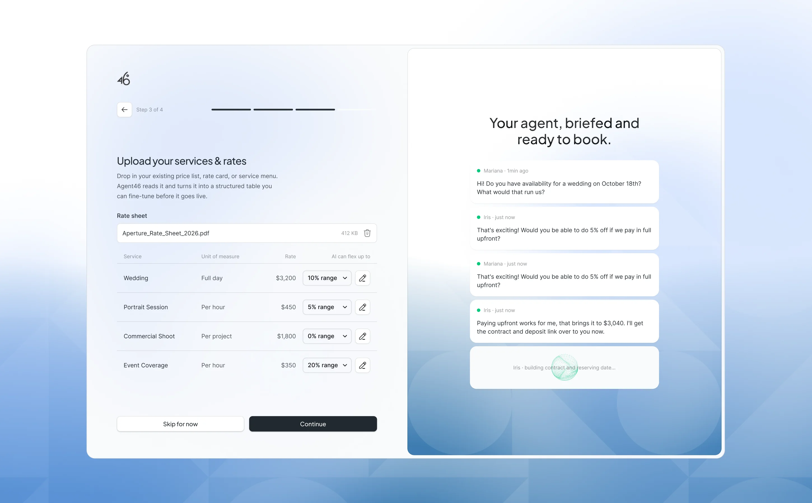
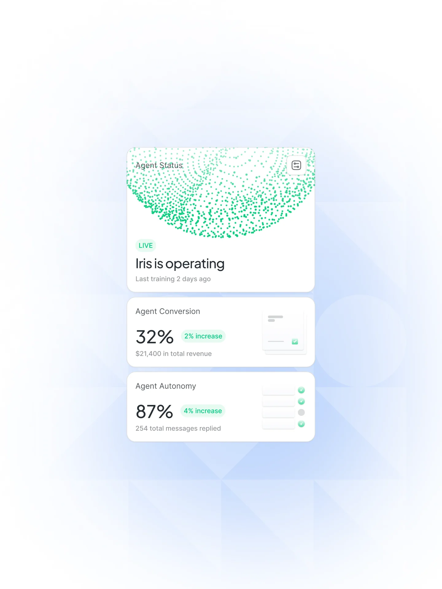
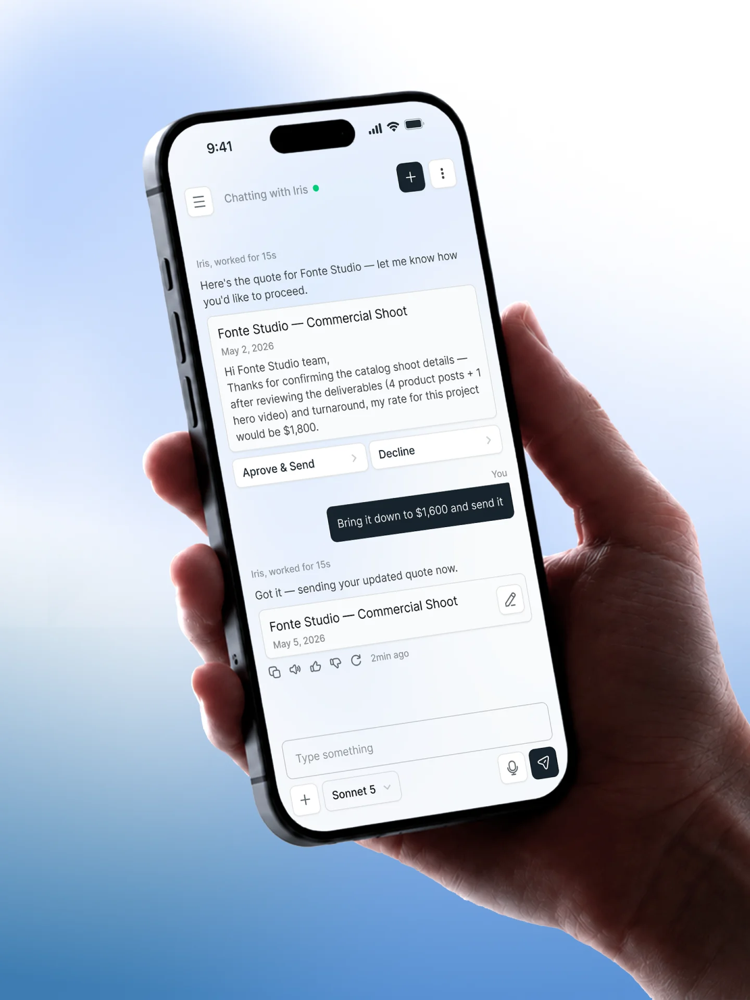
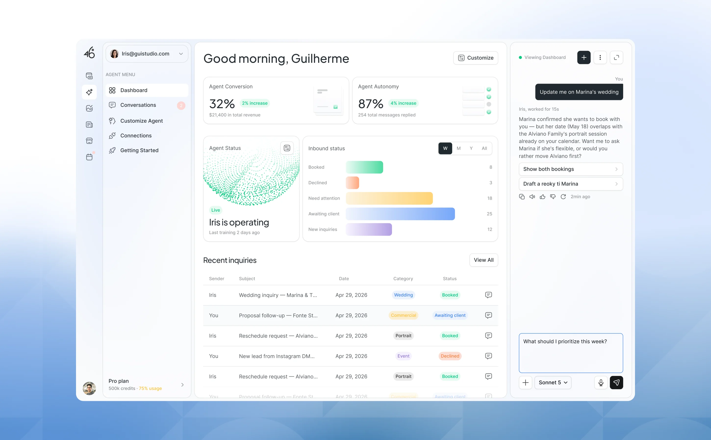
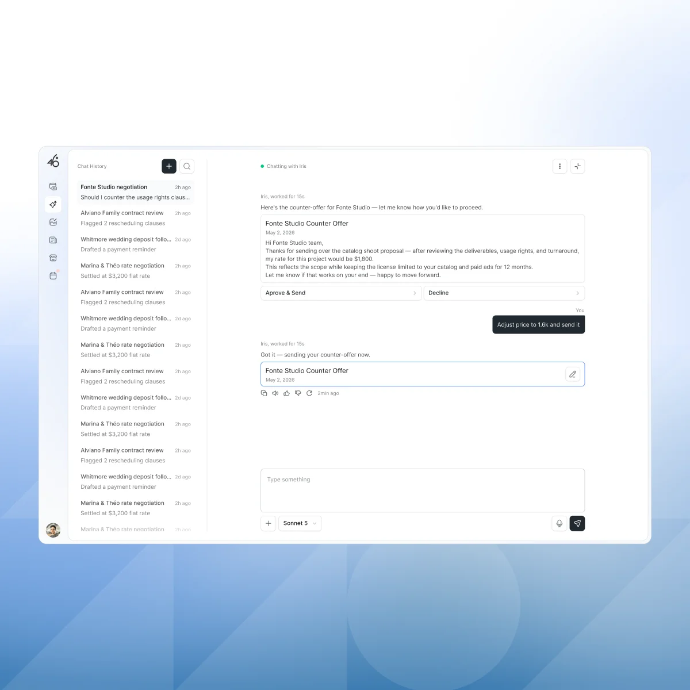
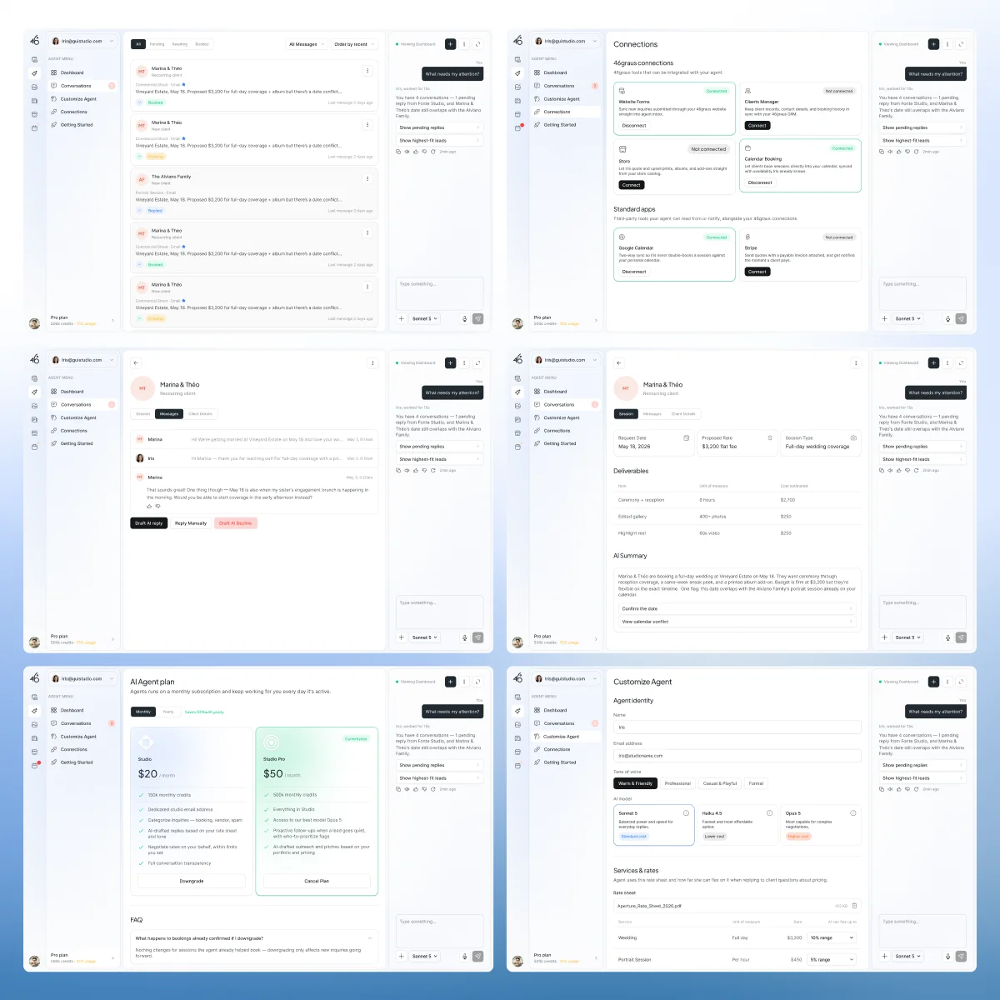
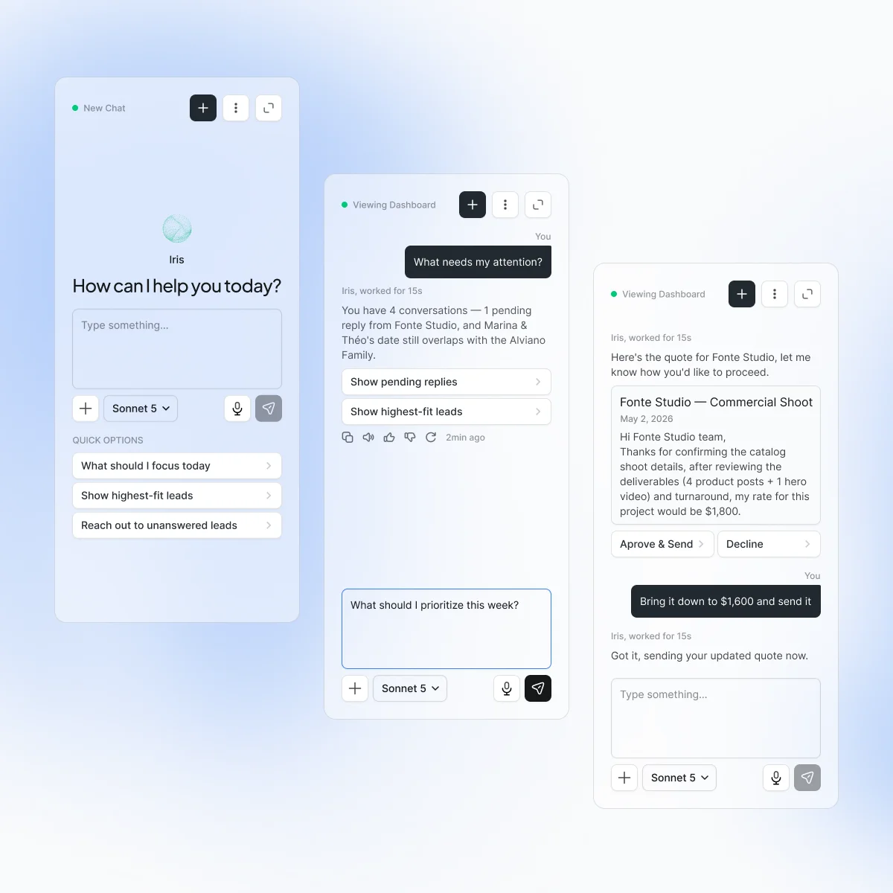
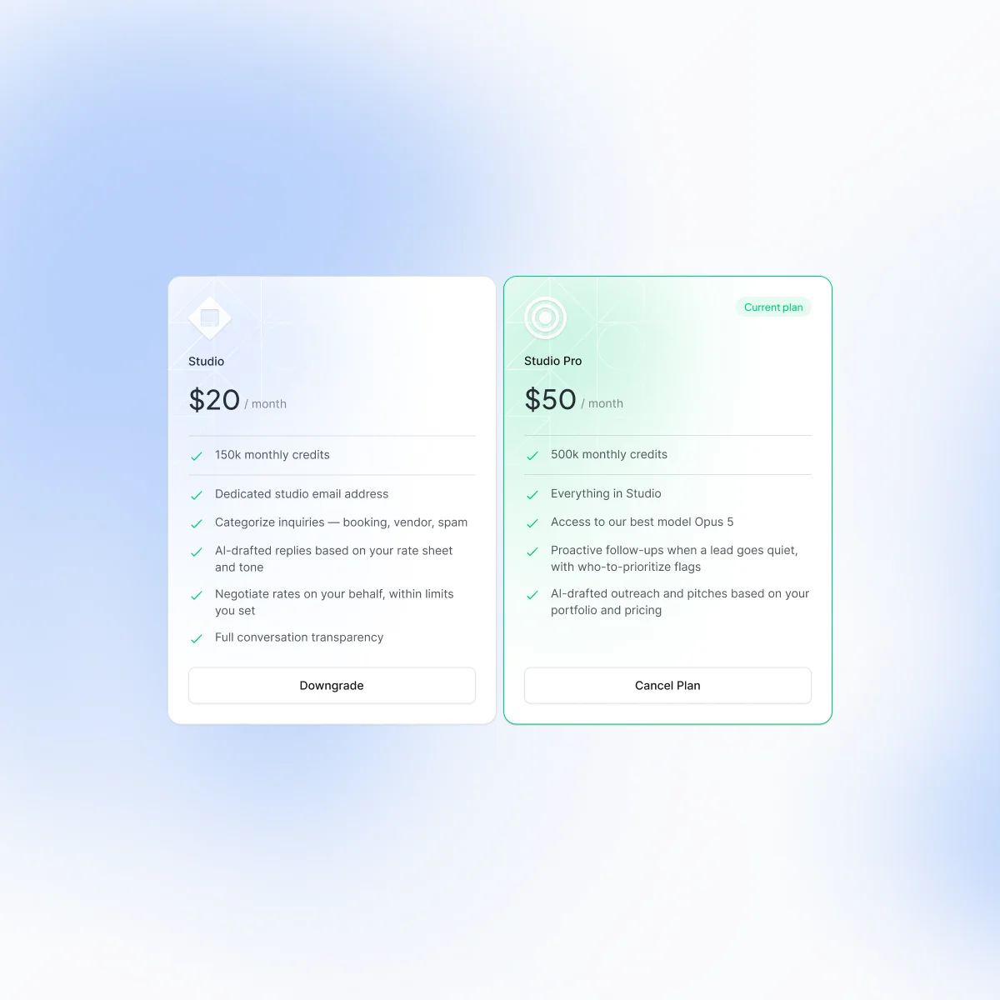

AI agent · B2B SaaS · 2026
AI Photographers Assistant
I improved the AI agent inside 46graus, a workspace for photographers. It had low autonomy, and most users quit its setup halfway. I redesigned the setup, the agent's rules and the workspace so photographers trust it with leads, quotes and bookings.
- Onboarding TTV
- -35%
- Faster setup, with rate sheets auto-filling the form
- Agent autonomy
- 22% → 61%
- Inquiries the agent now handles on its own
- Admin work saved
- ~5 hrs/week
- Less time on sales, follow-ups and booking (estimated)

Challenge
46graus came to me with an AI agent that photographers barely used. Its setup was part of onboarding, and most users quit halfway through.
The agent was meant to reply to leads before they went cold, take over the repetitive part of the job and book sessions straight into the calendar.

Research
Stakeholder interviews confirmed the opportunity: photographers spend 3–7 hours a week on sales and booking. The open question was where to draw the line on automation.
User interviews answered it. Photography runs on emotional connection. Weddings, newborn shoots and other personal events had to stay personal, while sports, business and small events were fine to automate. A first automatic reply was welcome, as long as it booked a call instead of closing the deal.
The design audit found the drop-off: setup asked for long groups of service and price inputs, and the chat lived on its own page, with no context.


Solution
-
Where the agent stops
It replies, schedules and negotiates per service, not as one package. It stops and asks on date conflicts, out-of-range budgets and judgment calls, like a discount in a slow month.
Trade-offLess automation, more trust. Photographers won't turn on an agent they can't predict.
-
Price is never invented
Prices come only from each service's table, with a flexibility range the photographer sets.
Trade-offA simple yes/no rule, so photographers trust the agent won't misquote.
-
Smart onboarding
Most photographers already have a rate sheet or website. Uploading it auto-fills the inputs that used to slow setup down.
Trade-offStill needs a quick review in case something is misread.
-
Dashboard and chat, together
The chat moved next to the dashboard, so the agent answers with leads, calendar conflicts and charts in view.
Trade-offLess room for each part, so the screen gets denser.





Impact
Time to value dropped 35%, and the agent now handles 61% of inquiries end to end, up from 22%. Half of photographers automated at least one service. They keep the conversations that matter and hand off the rest.
What I learned
- Where the AI stops matters more than what it can do. Clear limits made the agent more useful, not less.
- Simple rules beat smart ones at launch. A yes/no on pricing was easier to explain, test and trust.
- AI prototyping works once the design system is wired in. Rules that force real components and semantic tokens kept Claude Code from inventing UI.